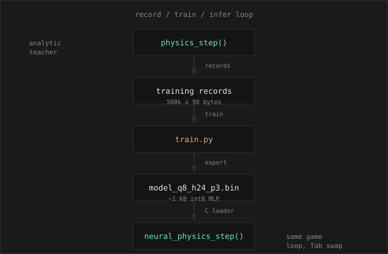
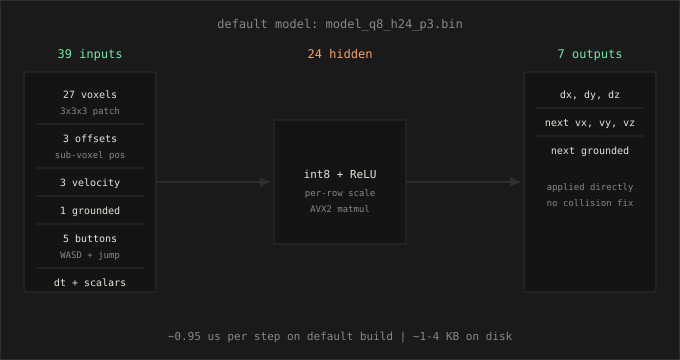

neural voxel parkour
replacing a C voxel character controller with a 1 KB int8 neural network

tl;dr
I built a small C/raylib voxel parkour game where the player physics can switch between an analytic character controller and a tiny neural network. The best shipped model is a 39-input, 24-hidden-unit int8 MLP. It runs in about 0.95 microseconds per step, roughly 12x slower than the analytic baseline but still tiny in real-time terms.
The important result is not that neural physics beats hand-written physics. It does not. The interesting result is that one-step prediction looks very good, while long rollout stability is much harder. The model can learn the local transition, but drift, jitter, and tunneling show up when it drives itself for hundreds of frames.
the idea
I wanted a small 3D voxel parkour game where the physics step could be swapped
at runtime. The analytic engine handles acceleration, friction, gravity, jumping,
and axis-separated AABB collision in one function: physics_step().
The goal was to train a neural network that predicts the same state transition,
then push inference latency down until it is close to the analytic baseline.
That means two parallel optimization tracks. On the algorithmic side: keep the teacher fast and deterministic. On the neural side: shrink the observation, quantize weights, fuse normalization, and tune the matmul kernels until the gap is measured in single-digit microseconds, not milliseconds.
the game
16x16x16 voxel world, procedural parkour maps, orange cube player, WASD and space to jump. Each launch generates a new map via random-walk platforms with gaps and height changes. Blue start, green goal. Fall below y = -4 and respawn. Reach the goal and the world regenerates.
--compare-video or ffmpeg from dumped
frames. MP4 preferred over GIF for page weight.
rollout is the hard part
One-step validation looks great for every model we kept (~98.7% grounded). The side-by-side clip shows what happens over hundreds of frames: mostly fine movement, then small errors compound into drift and occasional tunneling. That gap between one-step and rollout is the core result of this project.
architecture
The physics pass is isolated behind a single call site so analytic and neural paths share the same game loop:
if (physics_mode == PHYSICS_ANALYTIC)
physics_step(&player, input, dt);
else
neural_physics_step(&player, input, dt);The analytic engine is the teacher. During data collection it records paired before/after states under randomized input policies. The neural path loads a binary MLP from disk and runs inference in C with no pytorch at runtime.
Output is 7 floats: dx, dy, dz, next vx, next vy, next vz, next grounded. Training uses pytorch; inference uses exported float or int8 weights with per-row scale factors.

starting assumptions
These were the constraints I set before any optimization work began. They shaped every later decision.
- Fixed dt only. 1/60 s everywhere. No variable timestep in training or inference.
- Pure C MLP inference. No pytorch, no BLAS dependency at runtime. Weights load from a binary blob.
- Analytic teacher.
physics_step()generates labels. The network learns to imitate it, not invent its own physics. - One-step supervision. Train on single-tick transitions. Rollout drift is measured separately; it now drives default model selection, not just diagnostics.
- Swappable call site. Same game loop, same inputs, same observation packing. Only the step function changes.
- No collision correction at runtime. The network sets position and velocity directly. There is no analytic fallback. Small per-frame errors compound; the player can end up inside voxels.
- 98% grounded floor (one-step). Any model below that on held-out validation is rejected. Rollout stability is a separate, harder filter for picking the default.
Full writeup of the original spec lives in spec.md in the repo.
See building with cursor near the end for how those constraints were
enforced in practice.
implementation
The repo is plain C99 + raylib, CMake, and a small Python training script. No engine, no ECS, no runtime ML dependencies. The whole project is small enough to hold in your head: seven C files, one header of shared constants, two Python tools.
code layout
| file | role |
|---|---|
main.c | raylib loop, input, Tab toggle, model load order |
physics.c | analytic teacher: accel, friction, gravity, axis AABB collision |
world.c | 16³ voxel grid, procedural map, player spawn nudge |
observation.c | 3³ patch around player, feature packing for train + inference |
neural.c | binary model load, int8/float forward pass, AVX2 matmul, neural_physics_step() |
sim.c | headless dataset recorder, rollout benchmark vs analytic |
common.h | PATCH_D, INPUT_DIM, packed TrainingRecord, model magic bytes |
tools/train.py | load dataset, train MLP, fuse norm, export int8/float .bin |
closed loop
Everything hangs off one pipeline. Same binary, different CLI flags:
# 1. record 500k one-step transitions from analytic physics (headless, ~seconds)
./voxel_parkour.exe --record 500000 --out data/train.bin
# 2. train + export int8 models (~12 min stable sweep on CPU)
python tools/train.py --sweep-stable --epochs 40
# 3. measure rollout + latency vs analytic
./voxel_parkour.exe --bench models/model_q8_h24_p3.bin
# 4. play, toggle mid-game
./voxel_parkour.exe
Recording never opens a window. It runs the same physics_step() as the
game, writes fixed-size rows to disk, and rotates maps when the player falls or
an episode hits 400 steps. Training reads those rows, holds out 20% of map seeds
for validation, and exports weights the C loader understands.
observation format
Each training row is 90 bytes, packed to match C struct layout exactly:
- 27 bytes — voxel types in the 3³ neighborhood (0=empty, 1=solid, …)
- 12 bytes — sub-voxel offset (3 floats)
- 12 bytes — velocity before the step
- 6 bytes — grounded flag + 5 input buttons
- 4 bytes — fixed dt (1/60)
- 25 bytes — analytic targets: Δpos, next vel, next grounded
- 4 bytes — map seed (for train/val split)
At inference, pack_player_features() builds the same 39-float input
vector the trainer sees: voxels / 4, offsets, normalized vel, grounded, one-hot
inputs. Train/serve skew here would show up immediately as rollout drift, so the
packing path is shared logic duplicated once in C (not two different codepaths).
model binary format
Shipped models are int8 v2 blobs (~1–4 KB). Header: magic MLP!, version,
four ints (input_dim, h1, h2, output_dim). Weights are per-row quantized int8
with float scales; biases are pre-fused with input/output normalization at export
time so inference never touches mean/std arrays. Forward pass: int8 matmul →
scale → ReLU → int8 matmul → scale → 7 outputs applied directly to player state.
void neural_physics_step(Player *p, InputState input, float dt) {
float in[INPUT_DIM], out[OUTPUT_DIM];
pack_player_features(p, input, in);
neural_forward(in, out);
p->pos.x += out[0]; p->pos.y += out[1]; p->pos.z += out[2];
p->vel.x = out[3]; p->vel.y = out[4]; p->vel.z = out[5];
p->grounded = out[6] >= 0.5f ? 1 : 0;
}
AVX2 FMA kernels live only in neural.c. Applying -march=native
to the whole executable caused stack misalignment crashes in raylib's render path;
scoping SIMD to the inference translation unit fixed that.
benchmark modes
--bench runs 50 episodes × up to 300 steps. Each step: same random
input drives analytic and neural players in parallel from identical starting
state. We track mean position/velocity error, grounded mismatch %, and tunnel
count (neural AABB overlapping solids while airborne). That last metric matches
what you see as phasing in play.
analytic teacher (what the network imitates)
The teacher is deliberately boring: axis-separated AABB collision against a
16×16×16 voxel grid, no rotation, no swept tests. Each frame applies input
acceleration, horizontal friction, speed clamp, optional jump, gravity, then
moves X → Y → Z independently — if a move collides, snap back and zero velocity
on that axis. Landing on Y sets grounded = 1.
void physics_step(Player *p, InputState input, float dt) {
/* accel + friction + jump + gravity */
p->grounded = 0;
move_axis(p, 0, p->vel.x * dt); /* X, then Y, then Z */
move_axis(p, 1, p->vel.y * dt);
move_axis(p, 2, p->vel.z * dt);
}
Recording snapshots the player before the step, runs
physics_step(), snapshots after, and writes the delta as
training targets. The network never sees collision resolution code — it learns
the end-to-end mapping from local geometry + state to the teacher's outcome.
training and export
train.py loads the binary dataset with numpy struct unpacking
(one frombuffer pass over 500k rows, not a Python loop per sample).
Map seeds split train/val 80/20 so the network generalizes across procedural
layouts, not just held-out frames from the same map.
The MLP is a plain two-layer ReLU net in PyTorch: 39 → h → 7. After training,
fuse_weights() bakes input/output z-score normalization into the
first and last layer so C inference never loads mean/std arrays:
w1 = w1 / x_std; b1 = b1 - w1 @ x_mean # input norm → layer 1
w3 = w3 * y_std; b3 = b3 * y_std + y_mean # output denorm → layer 3
int8 export quantizes each weight row independently (per-row scale, max abs → 127).
Biases stay float32. The C loader reads magic MLP!, dims, packed int8
weights + scales, and runs the same graph as PyTorch at eval time — within
quantization error. Sweep flags train multiple hidden widths in one invocation,
reusing the cached dataset between models.
build and entry points
CMake fetches raylib 5.5, builds one executable with Release defaults
(-O3 -ffast-math). AVX2/FMA flags apply only to neural.c
— not the whole binary. Same exe, four modes:
| flag | behavior |
|---|---|
(none) | raylib game, Tab toggles analytic/neural, N reloads model |
--record N --out path | headless, writes N rows to train.bin |
--bench model.bin | headless rollout + forward-pass timing vs analytic |
Model load tries several relative paths (models/…,
../models/…) so the same binary works from repo root or
build/. Default search order prefers h24, then h48×24, h64, h48.
current models
Four int8 models remain in models/. All use native 3x3 observations
(500k recorded samples, 90-byte rows). Older 7x7, 9x9, float, and speed-ladder
(h12/h16/h32) checkpoints were removed after rollout testing.

| file | hidden | one-step | rollout | tunnel* | step |
|---|---|---|---|---|---|
model_q8_h24_p3.bin default |
24 | 98.7% | ~89% | ~2.4% | ~0.95 us |
model_q8_h48_p3.bin |
48 | 98.7% | ~80% | ~2.8% | ~1.8 us |
model_q8_h64_p3.bin |
64 | 98.7% | ~73% | ~2.7% | ~2.9 us |
model_q8_h48x24_p3.bin |
48x24 | 98.7% | ~78% | ~3.2% | ~2.4 us |
*tunnel = fraction of steps where the neural player overlaps solid voxels while
not grounded. Analytic physics: 0%. Measured on 50 episodes x up to 300 steps with
--bench.
optimization progression
Each checkpoint below is a real model variant we trained and benchmarked. For each one I list what we assumed would work, what actually drove the numbers, and what we learned before moving to the next step.
Model: hand-written physics_step()
Latency: ~0.08 us per tick
assumption
A few arithmetic ops plus three axis-separated collision checks would stay effectively free compared to any neural path. This is the target we are trying to approach, not beat.
what drives performance
- Fixed small constant work: accel, friction, gravity, jump, three axis moves
- No allocations, no branches beyond collision resolution
- Compiler inlines everything at -O3
result
Confirmed. Analytic physics uses roughly 0.005% of a 60 FPS frame budget. Every neural model is measured as a multiple of this number.
Input: 741 dims (729 voxels + 12 scalars)
Architecture: 741 -> 128 -> 128 -> 7
Latency: ~305 us full step (~4000x analytic)
One-step accuracy: 99.2% grounded, pos RMSE 0.00253
assumption
A 9x9x9 local patch gives enough spatial context to learn collision and jumping. A two-hidden-layer 128x128 MLP has enough capacity to match the teacher on one-step labels. Accuracy first, speed later.
what drives performance
- Matmul dominates. ~741x128 + 128x128 + 128x7 multiply-adds every tick
- Debug build. No -O3, no SIMD, naive dot products
- Runtime normalization. Separate mean/std pass before layer 1, denorm after layer 3
- Two-pass feature packing. Build observation struct, then pack to floats
- Float32 weights. Full bandwidth on every weight read
result
Accuracy was good immediately. Speed was not playable-adjacent without optimization. The 9x9 patch assumption held for accuracy but was overkill for this simple geometry. We had proof the swap worked; next goal was inference.
Input: 741 dims
Architecture: 741 -> 64 -> 64 -> 7
Latency: ~6 us full step (~80x analytic), forward ~4.9 us
One-step accuracy: 99.1% grounded, pos RMSE 0.00324
assumption
Most of the 305 us was implementation overhead, not fundamental compute. Release build, smaller hidden layers, and a faster inference path would get us into single-digit microseconds without retraining on a smaller patch.
what drives performance (changes applied)
- Release build:
-O3 -ffast-math -fno-math-errno - Fused normalization: input/output mean and std baked into weights at load time. No runtime norm arrays.
- Single-pass packing:
pack_player_features()writes the 741-float vector directly from world state - Unrolled scalar matmul: 8-wide manual unroll,
restrictpointers - Smaller network: 64x64 cuts FLOPs ~4x vs 128x128
result
~50x speedup from checkpoint 1, mostly from compiler flags and removing redundant normalization passes. Still 80x slower than analytic because the 741-wide first layer dominates. Patch size was now the obvious next lever.
Input: 741 dims
Architecture: 741 -> 32 -> 7 (one hidden layer)
Latency: ~3.2 us full step (~35x analytic), forward ~2.7 us
One-step accuracy: 99.0% grounded, pos RMSE 0.00465
assumption
We could drop the second hidden layer entirely and cut neurons to 32 without losing playability. AVX2 FMA would accelerate the still-large 741-input first layer.
what drives performance (changes applied)
- AVX2 FMA kernels: 8-wide SIMD dot products on all layers
- Single-layer MLP: eliminates 64x64 middle matmul entirely
- Row-wise AVX: we tried input-major layout for layer 1 first; it broke rollout accuracy. Row-wise AVX on output-major weights was the fix.
- -mavx2 -mfma compile flags
result
Another ~2x win, but the 741-input first layer is still the bottleneck. One-step accuracy held above 99%. Input-major AVX was a useful negative result: layout matters as much as SIMD when in_n is large and out_n is small.
Input: 355 dims (343 voxels + 12 scalars), cropped from 9x9 records
Architecture: 355 -> 16 -> 7 int8
Latency: ~2.1 us full step (~26x analytic), forward ~1.8 us
One-step accuracy: 98.83% grounded, pos RMSE 0.00571
assumption
We do not need 9x9 context for this parkour. Cropping to 7x7 halves input dims without re-recording the dataset. int8 quantization cuts weight memory bandwidth. A 16-neuron single layer is enough if we accept slightly lower accuracy.
what drives performance (changes applied)
- Smaller patch: PATCH_R 3 (7x7x7). Training crops center 7x7 from existing 792-byte records.
- int8 weights: per-output-row scale factors, int8 dot products in C
- Pre-fused normalization at export: int8 models skip runtime mean/std entirely
- 16-neuron width: smallest layer count that cleared 98% grounded in sweep
- -march=native: CPU-specific instruction selection
result
First checkpoint under 98% was not the issue; h16 cleared 98.83%. The
combined patch shrink + int8 + tiny hidden layer broke the ~26x barrier.
These 7x7 models are historical only; they were removed from models/
once native 3x3 training landed.
Input: 39 dims (27 voxels + 12 scalars)
Architectures: h12, h16, h24, h32 single-layer int8 MLPs
Best latency: ~0.75 us full step (h12), ~0.52 us (h16)
One-step accuracy: 98.55% to 98.67% grounded (all above floor)
assumption
Immediate neighbors are enough for this world. Platforms are 2-4 voxels wide, gaps are small, and the player only needs to know what is directly adjacent plus velocity and input state. If 3x3 fails one-step validation, grounded accuracy would drop below 98%.
what drives performance (changes applied)
- 39-input first layer: down from 741. First matmul is ~19x fewer ops than original.
- Native 3x3 dataset: 500k samples recorded at PATCH_D=3 (record_size=90). No crop step.
- int8 sweep:
python tools/train.py --sweeptrains h12 through h32 - Feature pack is cheap: 27 voxel reads + 12 scalars. Small relative to matmul at h24+.
result
3x3 held on one-step metrics. h12 was the latency winner (~0.75 us full step). h16 was oddly faster on full step (~0.52 us) despite a larger forward pass. All four cleared 98%. Playtesting and rollout benchmarks showed one-step numbers were not enough to pick a default.
Input: 39 dims (27 voxels + 12 scalars)
Models kept: h24, h48, h64, h48x24 int8 on 3x3 patch
Default: model_q8_h24_p3.bin (~0.95 us, ~89% rollout grounded)
One-step accuracy: 98.65% to 98.74% grounded on kept models
Playtest reality: ~2.4% of airborne benchmark steps still overlap solids (293 / 12408). You can feel this as occasional phasing. Analytic: 0 overlaps.
assumption
Multi-step drift is the real failure mode. A model that looks fine on held-out one-step labels can still tunnel through voxels after hundreds of ticks. Wider hidden layers, a two-layer MLP, or a 5x5 patch might improve rollout without giving back too much latency.
what drives performance (changes applied)
- Rollout benchmark: 50 episodes x 300 steps, analytic vs neural in parallel, grounded agreement tracked
- Stable sweep:
--sweep-stabletrains h48, h64, and 48x24 two-layer models - 5x5 patch experiment: tried larger observation windows; h24 on 3x3 still won rollout
- Model cleanup: old 7x7 and 9x9 models removed from
models/ - Default selection: h24 balances ~1.3 us step cost with best rollout among kept models
result
Bigger is not always better. h48x24 (two-layer) hits 98.74% one-step but only ~78% rollout. h64 is ~73% rollout at ~2.8 us. h48 is ~80% at ~2.4 us. h24 stays the default: ~89% rollout, ~0.95 us, 98.67% one-step. Still ~12x analytic. Wider models (h48, h64, 48x24) did not improve rollout; a 5x5 patch re-record and retrain also lost to h24 on 3x3. The remaining gap is structural: open-loop prediction with no post-step collision fix.
where time goes (current 3x3 h24 model)
At 39 inputs and 24 hidden neurons, the full neural step breaks down roughly as:
- pack_player_features(): 27 voxel lookups + 12 scalar writes.
- Layer 1 (39 -> 24 int8): 936 int8 multiply-adds with per-row scale. Dominates forward pass (~0.76 us).
- Layer 2 (24 -> 7 int8): 168 multiply-adds. Minor.
- State apply: write pos delta, velocity, grounded flag. No collision pass.
AVX2 FMA lives only in neural.c (not whole-program -march=native);
global AVX flags caused stack misalignment crashes when calling raylib from main.
Compared to analytic (~0.08 us), the network still does hundreds of multiply-adds per tick. We removed the speed-ladder models (h12/h16/h32) from disk; they were faster on paper but worse on rollout.
benchmarks
| checkpoint | input | arch | neural step | one-step | rollout | tunnel | vs analytic |
|---|---|---|---|---|---|---|---|
| analytic baseline | - | - | ~0.08 us | 100% | 100% | 0% | 1x |
| model.bin (unoptimized) | 741 | 128x128 f32 | ~305 us | 99.2% | - | - | ~3800x |
| model_fast.bin | 741 | 64x64 f32 | ~6 us | 99.1% | - | - | ~75x |
| model_tiny.bin | 741 | 32 f32 | ~3.2 us | 99.0% | - | - | ~40x |
| model_q8_h16 (7x7, removed) | 355 | 16 int8 | ~2.1 us | 98.8% | - | - | ~26x |
| model_q8_h24_p3 (default) | 39 | 24 int8 | ~0.95 us | 98.7% | ~89% | ~2.4% | ~12x |
| model_q8_h48_p3 | 39 | 48 int8 | ~1.8 us | 98.7% | ~80% | ~2.8% | ~22x |
| model_q8_h64_p3 | 39 | 64 int8 | ~2.9 us | 98.7% | ~73% | ~2.7% | ~36x |
| model_q8_h48x24_p3 | 39 | 48x24 int8 | ~2.4 us | 98.7% | ~78% | ~3.2% | ~30x |
lessons
one-step accuracy lies
Every checkpoint looked fine on held-out one-step validation (98-99% grounded). Early writeups sometimes reported those numbers as if they were long-run rollout scores. They are not. Rollout benchmarks (50 episodes x 300 steps, analytic vs neural in parallel) show ~89% grounded agreement for the default h24 model. Errors compound: position drifts, the 3x3 patch sees the wrong voxels, and the player phases through blocks (~2.4% of airborne steps in bench). Analytic physics has zero such overlaps.
why old builds felt more stable
Crop-trained weights from the first 3x3 sweep are gone; we re-recorded native 3x3 data and retrained. One-step metrics stayed similar but rollout changed. There is no analytic collision fallback (removed on purpose). If an older build felt smoother, it may have been different weights, not a magic architecture change. The current default is the best rollout model we still have on disk.
patch size mattered more than hidden width
Going from 741 to 355 to 39 inputs gave larger wins than any matmul kernel tweak. The 9x9 assumption was safe but expensive. 3x3 was the risky bet that paid off for this specific world generator.
implementation details compound
Release flags, fused normalization, single-pass feature packing, and int8 export each gave meaningful gains alone. Stacked together they turned a research prototype into something that runs at ~0.95 us (h24 default) without changing the fundamental fact that matmul is slower than analytic collision code.
bigger models do not fix rollout
h48, h64, and 48x24 all beat h24 on one-step metrics but score worse on rollout and tunnel counts. A 5x5 patch experiment did not beat h24 on 3x3 either. More neurons or context within this MLP formulation does not solve open-loop drift. Next levers: multi-step training, or a minimal post-neural depenetration pass (nudge out of solids without full analytic physics).
analytic will always win on raw speed
The goal was never to beat analytic. It was to get neural close enough that the swap is a viable design option. At ~12x and well under 0.01% of a 60 FPS frame budget, we are there for latency. Rollout fidelity is the open problem.
building with cursor
I did not hand-write most of this. I wrote spec.md and drove the
implementation through Cursor agents in one afternoon. The agent wrote a lot of
code, but the spec defined what counted as success.
cursor was good at
- implementing file formats (90-byte records, MLP! binary layout)
- writing C/Python glue and CMake setup
- fixing compile errors and segfaults (AVX scope, buffer overflow)
- running benchmark loops and pasting comparison tables
- generating model variants (patch shrink, int8 export, sweeps)
I still had to
- reject analytic fallback when the agent tried to hide rollout drift
- define success metrics (98% one-step floor, then rollout for default pick)
- decide latency vs stability tradeoffs (h12 fast, h24 default)
- playtest feel and call out phasing the bench did not fully capture
- notice one-step vs rollout confusion in early writeups
why this project fits agents well
- Closed loop with objective metrics. Record, train, bench, play. Every hypothesis ends in a number.
- Small surface area. ~2k lines of C, one MLP, one training script. Fits in context.
- Spec as source of truth. Fixed dt, no pytorch at runtime, binary export format.
- Embarrassingly parallel experiments. Each patch/architecture pivot is a prompt + bench run.
spec.md as the contract
Before any code landed, I wrote a spec: observation layout, record format, model binary layout, accuracy floor, swap interface. When the agent added collision fallback to hide drift, I rejected it against the spec and the real problem surfaced.
prompts that moved the needle
- "Implement the full pipeline from spec.md." — greenfield in ~2 hours of agent time.
- "305 us is too slow. Optimize inference without changing accuracy." — ~50x in one iteration.
- "Try shrinking the patch to 7x7, then 3x3. Sweep and bench each."
- "Remove analytic fallback — pure neural only."
- "Bench numbers don't match playtesting." — found
sample_in[729]overflow.
human vs agent split
| agent owned | I owned |
|---|---|
| C/Python/CMake edits, SIMD kernels, binary I/O | spec constraints, accuracy vs latency tradeoffs |
cmake --build, --record, --bench, sweeps | rejecting analytic fallback, picking h24 default |
| gdb segfault bisect, buffer overflow find | playtesting feel, calling out phasing |
| blog drafts, metric tables, reproduce commands | correcting one-step vs rollout confusion |
End-to-end from empty repo to playable neural swap with documented benchmarks: one afternoon. Without Cursor that is easily a week of setup and export glue.
reproduce
cd build && cmake .. -DCMAKE_BUILD_TYPE=Release && cmake --build .
./voxel_parkour.exe --record 500000 --out ../data/train.bin
python tools/train.py --sweep-stable --epochs 40 # h48, h64, h48x24 on 3x3 data
./voxel_parkour.exe --bench ../models/model_q8_h24_p3.bin
./voxel_parkour.exe
# side-by-side video (planned):
# ./voxel_parkour.exe --compare-video models/model_q8_h24_p3.bin --seed 123 --out side_by_side.mp4
Tab toggles analytic and neural physics mid-game. N reloads the model.
Game loads model_q8_h24_p3.bin first, then falls back through
h48x24, h64, and h48. Training takes ~13 min for the stable sweep on CPU;
--log-every 5 prints ETA during training.
what is next
Rollout is ~89% on the default model, not perfect. Phasing still happens in play despite good one-step numbers. Likely next experiments: multi-step training loss (teach stable trajectories, not single frames), or a lightweight depenetration clamp after the neural step (not full analytic fallback). Residual learning (predict a delta on top of analytic) is another path.